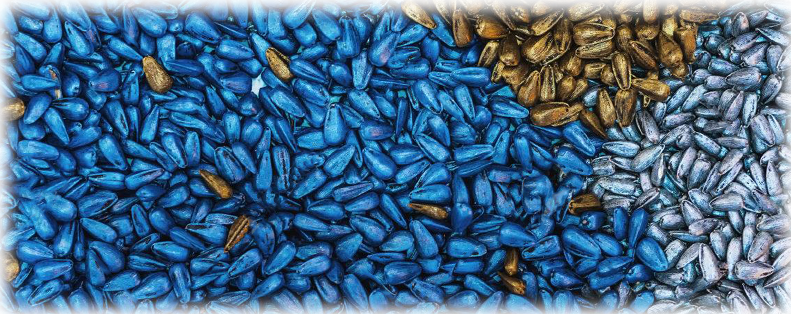
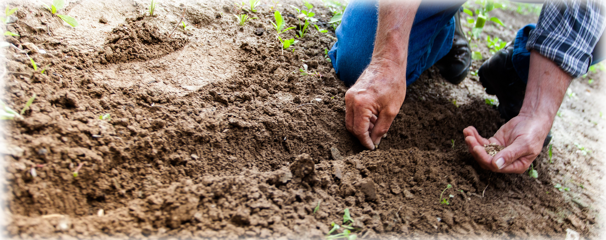

La importancia de la selección de Híbridos o Variedades de polinización abierta (OP) a la
hora de sembrar.

Al momento de sembrar, el agricultor encuentra una serie de interrogantes a las que debe dar respuesta para una efectiva ejecución de sus acciones, aspectos como
seleccionar el lote de terreno, dimensión del área de siembra, disponibilidad de agua, rubro y época, son apenas el inicio del análisis. Todas estas circunstancias
se encontraran condicionadas a factores económicos, logísticos, de tradición, ambientales y comerciales que conformaran el conglomerado de variables que llevaran
al agricultor a un análisis conclusivo en la escogencia de lo que más adelante será su cultivo. 
La diferencia entre una siembra exitosa con una que no lo sea, se encuentra en la idoneidad de las decisiones tomadas, además de todos aquellos factores que directa
o indirectamente afecten la actividad desarrollada. Un ámbito de crucial importancia que se debe considerar, es la selección de las semillas adecuadas que mejor se adapten
a la realidad presente del agricultor en un momento específico.En el ámbito comercial una de las formas de clasificación de semillas es entre variedades de polinización
libre o abierta (OP por sus siglas en ingles) conocidas comúnmente como “Variedades”, y variedades Hibridas que son las resultantes de procesos de selección, cruzamiento
(polinización controlada) que busca el aprovechamiento del potencial genético y factores como el vigor híbrido. Estas últimas semillas se le conoce como “Híbridos” o
“Semillas Híbridas”.
Algunas diferencias entre Semillas Variedades OP y Semillas Hibridas:
Variedades
Híbridos
La producción de sus semillas es sencilla
Sus semillas son el resultado de un proceso complejo
En su mayoría son de libre producción, y pueden ser comercializados por diversas marcas
Tienen derecho de propiedad, y son comercializados por una marca específica.
Presentan alta variabilidad en formatos, tamaños, calidad, ciclos…
Son mas uniformes en producción, tamaños, calidad, ciclos…
Suelen ser susceptibles a enfermedades
Son desarrollados con resistencia o tolerancia a enfermedades.
Sus potenciales de rendimientos es limitado
Su potencial de rendimiento es superior
Sus precios de venta son menores
Alto valor de las semillas
Se suelen vender en gramos, libras o kilogramos.
Sus ventas mayormente son por número de semillas(Millar).
¿Cuándo o por que seleccionar una Variedad o un hibrido?, es una pregunta que puedan hacerse muchos agricultores, su respuesta dependerá de la realidad de
cada caso y del objetivo que se pretenda, una manera de explicarlo sería con el siguiente ejemplo: Dos agricultores desean sembrar un cultivo de hortalizas
en época seca, para ello uno dispone de insumos, experiencia y recursos suficientes para varias hectáreas de cultivo, el otro agricultor quiere aprender a
conocer el cultivo con una superficie conservadora. En estos casos sin profundizar en detalles más complejos se recomendaría al primer agricultor a buscar
semillas hibridas de alto potencial de rendimiento en la vanguardia del mercado para buscar maximizar su producción y por tanto sus ganancias, en cuanto al
segundo agricultor se le recomendaría empezar con materiales rústicos y con valores moderados a fin de minimizar los riesgos de perdidas, en este segmento
encontrara semillas de variedad.
En síntesis podríamos decir que las semillas de Variedades OP, son un recurso de sencillo manejo, bajo costo, de rendimientos y/o formatos que muchas veces no
son los más demandados por los consumidores, pero su bajo nivel de inversión minimiza los riesgos de pérdidas a simple vista lo que hoy en día es una condición
importante para los agricultores. Por su parte el uso de semillas hibridas garantizan altos potenciales de rendimientos, con formatos y demás características de
frutos que mejor se adaptan a los requerimientos de los consumidores por lo que tienden a tener más valor, pero a su vez son más exigentes en condiciones de manejo
e inversión. Por eso a la hora de sembrar el agricultor debe estar muy claro de donde está y hacia donde quiere proyectarse, ya que de esto dependerá su éxito.
Para finalizar, y a manera de recomendación, la escogencia entre variedades OP o Híbridos es muy importante, tanto como el hecho de que la adquisición de
semillas sea de marcas reconocidas y por representantes comerciales formales y serios en el mercado, ya que tanto la piratería como el mercado informal de semillas
van en contra de la calidad y desempeño de las mismas al no conocer el manejo ni la procedencia que se le ha dado a tan importante insumo, recordemos que las semillas
son seres vivos que requieren de ciertas condiciones para su conservación adecuada.Por todo lo anterior, el uso de semilla de origen confiable es muy importante para
una cosecha exitosa.
Gerente de Desarrollo, Agrícola Tanausu C.A
en febrero 2019